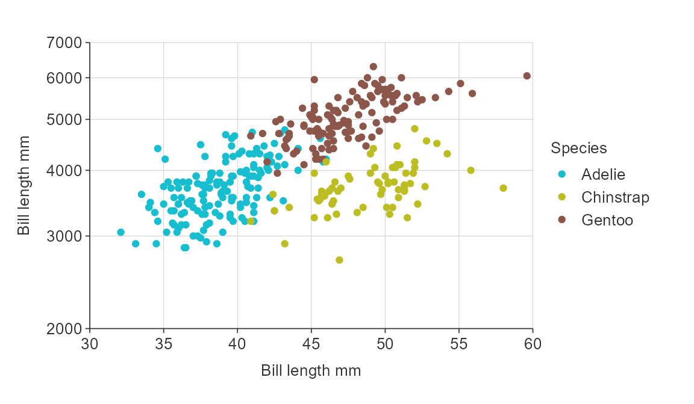
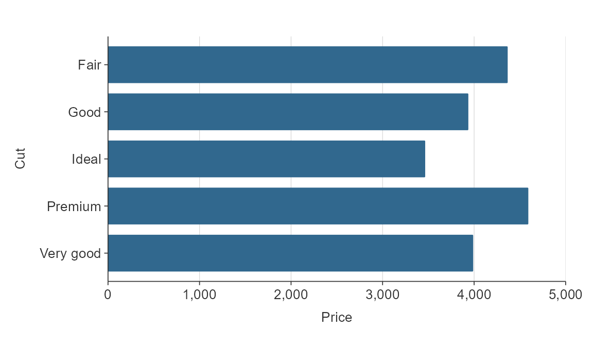
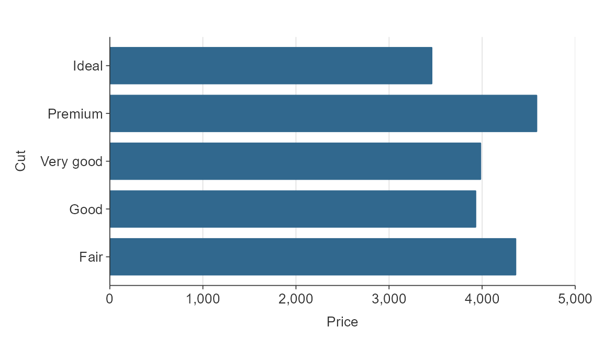
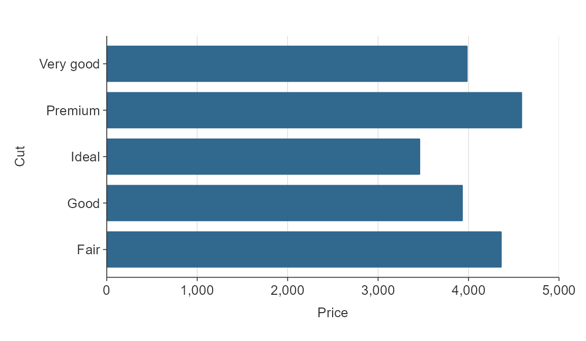
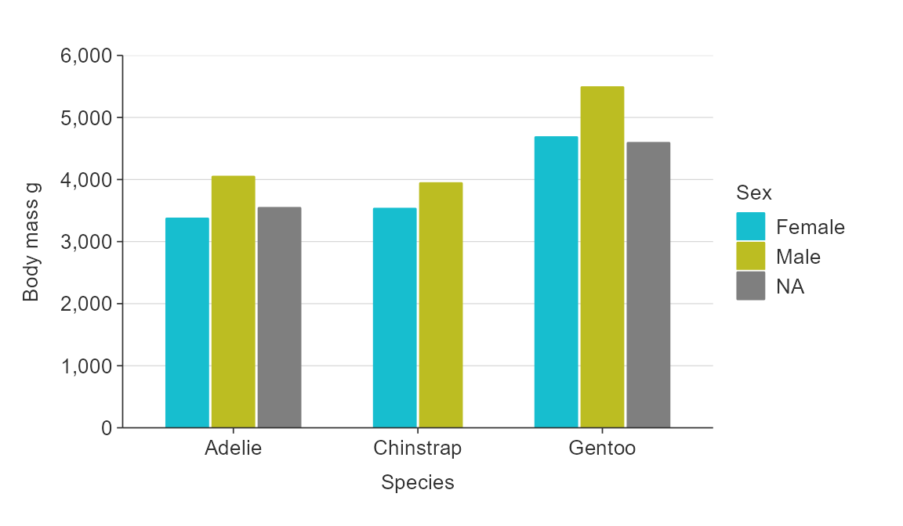
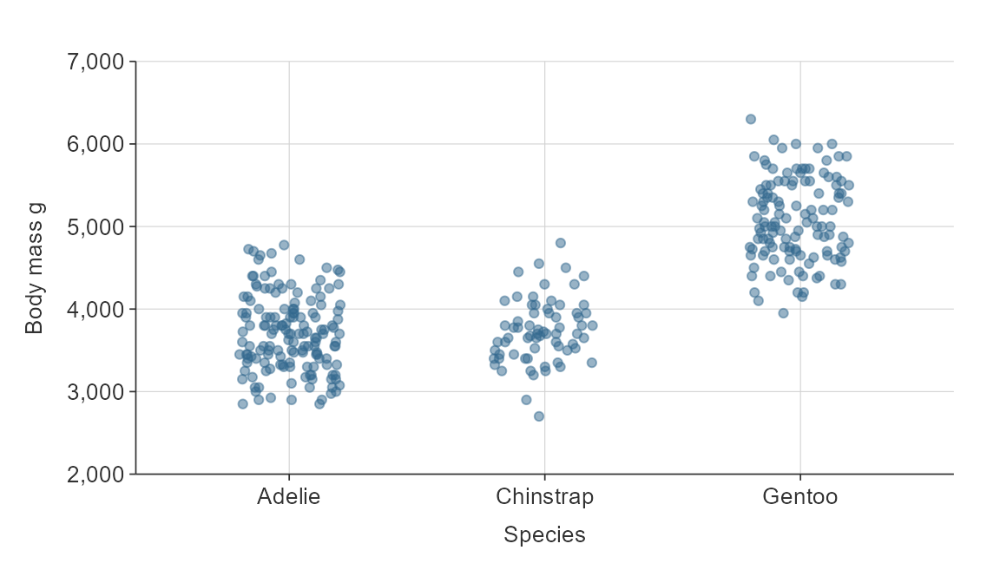

Overview
simplevis uses consistent prefixes in arguments to help users to enable users to narrow down what they are looking for and then enable the Rstudio auto-complete to provide options.
In general:
- Arguments that relate to the x scale start with
x_ - Agruments that relate to the y scale start with
y_ - Arguments that relate to the colour scale start with
col_ - Arguments that relate to facetting start with
facet_
Therefore, if you know want to adjust the x scale but can’t think how, you can start typing x_ within the simplevis function, press tab, and then you will be presented with a lot of options. You can use the arrow keys to scroll through these, and the tab to select.
One deviation from this logic is that colour palette is selected using a pal argument consistently in all functions regardless of whether the colour palette relates to a colour scale or just to everything.
Labels
You can adjust labels by provinding a function or named vector to the *_labelsargument.
All categorical variables are converted to sentence case by default using snakecase::to_sentence_case.
Numeric variables are generally converted using the scales::label_comma() by default, but sometimes converted to scales::label_number(). Numeric colour variables are converted to bins seperated by n-dashes using an internal function.
You can turn off any simplevis default transformations to labels using function(x) x.
gg_point_col_facet(penguins,
x_var = bill_length_mm,
y_var = body_mass_g,
col_var = sex,
facet_var = species)
gg_point_col_facet(penguins,
x_var = bill_length_mm,
y_var = body_mass_g,
col_var = sex,
facet_var = species,
y_title = "Body mass (kg)",
x_labels = scales::label_dollar(),
y_labels = function(x) glue::glue("{x / 1000} kg"),
col_labels = stringr::str_to_upper,
facet_labels = function(x) stringr::str_to_upper(stringr::str_sub(x, 1, 1)))
Numeric scales
simplevis graphs numeric scales default to:
- starting from zero for numeric scales on bar graphs.
- not starting from zero for numeric scales on all other graphs.
You can use the x_zero and y_zero arguments to change the defaults.
gg_point_col(penguins,
x_var = bill_length_mm,
y_var = body_mass_g,
col_var = species,
x_zero = TRUE,
y_zero = TRUE)
Adjust the number of breaks for numeric x and/or y scales.
gg_point_col(penguins,
x_var = bill_length_mm,
y_var = body_mass_g,
col_var = species,
x_breaks_n = 6,
y_breaks_n = 10)
Balance a numeric scale so that it has equivalence between positive and negative values.
gg_point_col(penguins,
x_var = bill_length_mm,
y_var = body_mass_g,
col_var = species,
y_balance = T)
Zero lines default on if a numeric scale includes positive and negative values, but can be turned off if desired using the *_zero_line argument.
Transform numeric x and y scales by adding a ggplot2 scale_*_continuous layer.
gg_point_col(penguins,
x_var = bill_length_mm,
y_var = body_mass_g,
col_var = species) +
ggplot2::scale_y_log10(
name = "Bill length mm",
breaks = function(x) pretty(x, 4),
limits = function(x) c(min(pretty(x, 4)), max(pretty(x, 4))),
expand = c(0, 0)
) 
Discrete scales
simplevis automatically orders hbar graphs of character variables alphabetically.
plot_data <- ggplot2::diamonds %>%
mutate(cut = as.character(cut)) %>%
group_by(cut) %>%
summarise(price = mean(price))
gg_hbar(plot_data,
x_var = price,
y_var = cut)
If there is an inherent order to the character variable that you want it to plot in, then you should convert the variable to a factor, and give it the appropriate levels.
cut_levels <- c("Ideal", "Premium", "Very Good", "Good", "Fair")
plot_data <- ggplot2::diamonds %>%
mutate(cut = as.character(cut)) %>%
mutate(cut = factor(cut, levels = cut_levels)) %>%
group_by(cut) %>%
summarise(price = mean(price))
gg_hbar(plot_data,
x_var = price,
y_var = cut)
Discrete scales can be reversed easily using the relevant y_rev or x_rev argument.
plot_data <- ggplot2::diamonds %>%
mutate(cut = as.character(cut)) %>%
group_by(cut) %>%
summarise(price = mean(price))
gg_hbar(plot_data,
x_var = price,
y_var = cut,
y_rev = TRUE)
Simple hbar and vbar plots made with gg_bar() or gg_hbar can be ordered by size using y_reorder or x_reorder. For other functions, you will need to reorder variables in the data as you wish them to be ordered.
plot_data <- ggplot2::diamonds %>%
mutate(cut = as.character(cut)) %>%
group_by(cut) %>%
summarise(price = mean(price))
gg_hbar(plot_data,
x_var = price,
y_var = cut,
y_reorder = T)
For other functions, you will need to reorder the relevant variables as you want.
The tidytext package provides a method for reordering within facets.
plot_data <- penguins %>%
group_by(species, sex) %>%
summarise(body_mass_g = mean(body_mass_g, na.rm = TRUE)) %>%
ungroup() %>%
mutate(species2 = forcats::fct_rev(tidytext::reorder_within(species, body_mass_g, sex)))
gg_hbar_col_facet(
plot_data,
x_var = body_mass_g,
y_var = species2,
col_var = species,
facet_var = sex,
facet_na_rm = TRUE,
facet_scales = "free_y",
y_labels = function(x) stringr::str_to_sentence(stringr::word(x, sep = "___")),
col_legend_none = TRUE)
Colour scales
Customise the colour title. Note that because colour labels will be converted to sentence case by default in simplevis, but we can turn this off when we do not want this to occur using function(x) x.
plot_data <- ggplot2::diamonds %>%
group_by(cut, clarity) %>%
summarise(average_price = mean(price))
gg_hbar_col(plot_data,
x_var = average_price,
y_var = cut,
col_var = clarity,
col_labels = function(x) x,
pal_rev = TRUE)
Reverse the palette.
plot_data <- ggplot2::diamonds %>%
group_by(cut, clarity) %>%
summarise(average_price = mean(price))
gg_hbar_col(plot_data,
x_var = average_price,
y_var = cut,
col_var = clarity,
col_labels = function(x) x,
pal_rev = TRUE)
Reverse the order of coloured bars.
plot_data <- ggplot2::diamonds %>%
group_by(cut, clarity) %>%
summarise(average_price = mean(price))
gg_hbar_col(plot_data,
x_var = average_price,
y_var = cut,
col_var = clarity,
col_labels = function(x) x,
col_rev = TRUE)
NA values
You can quickly remove NA values by setting x_na_rm, y_na_rm, col_na_rm or facet_na_rm arguments to TRUE.
gg_point_col_facet(penguins,
x_var = bill_length_mm,
y_var = body_mass_g,
col_var = sex,
facet_var = species,
col_na_rm = T)
Expanding the scale
To expand the scale use x_expand and y_expand arguments with the ggplot2::expansion function, which allows to expand in either or both directions of both x and y in an additive or multiplative way.
plot_data <- storms %>%
group_by(year) %>%
summarise(wind = mean(wind))
gg_line(plot_data,
x_var = year,
y_var = wind,
x_expand = ggplot2::expansion(add = c(0, 5)),
y_expand = ggplot2::expansion(mult = c(0, 0.025)))
Position adjustments
In general plots are positioned exactly as the data provided.
Exceptions are bar*() and hbar*(), which positions bars side-by-side by default (i.e. dodged).
plot_data <- penguins %>%
group_by(species, sex) %>%
summarise(body_mass_g = mean(body_mass_g, na.rm = TRUE))
gg_bar_col(plot_data,
x_var = species,
y_var = body_mass_g,
col_var = sex)
However, a option to stack bars is also available.
plot_data <- penguins %>%
group_by(species, sex) %>%
summarise(body_mass_g = mean(body_mass_g, na.rm = TRUE))
gg_bar_col(plot_data,
x_var = species,
y_var = body_mass_g,
col_var = sex,
stack = TRUE,
col_na_rm = TRUE,
size_width = 0.5)
point allows you to jitter in an x or y direction.
gg_point(penguins,
x_var = species,
y_var = body_mass_g,
x_jitter = 0.2,
alpha_point = 0.5) 
pointrange and hpointrange allow you to specify an amount to dodge by, if desired.
plot_data <- penguins %>%
group_by(sex, species) %>%
summarise(middle = median(body_mass_g, na.rm = TRUE),
lower = quantile(body_mass_g, probs = 0.25, na.rm = TRUE),
upper = quantile(body_mass_g, probs = 0.75, na.rm = TRUE))
gg_pointrange_col(
plot_data,
x_var = species,
ymiddle_var = middle,
ymin_var = lower,
ymax_var = upper,
col_var = sex,
col_na_rm = TRUE,
y_title = "Body mass g",
x_dodge = 0.3)